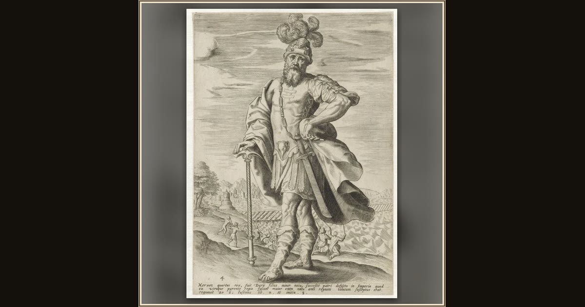

Koning Xerxes (Perzische koningen)
anonymous (printmaker); Gerard de Jode (publisher) · 1547 - 1585 · rijksmuseum
Xerxes stands in armour before a waterfront scene; Atossa tells Darius that he yoked the Hellespont to give his army a passage (722). Explore its place in Aeschylus's Plays, Persians, line 718.